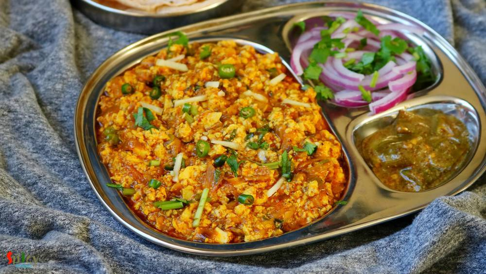
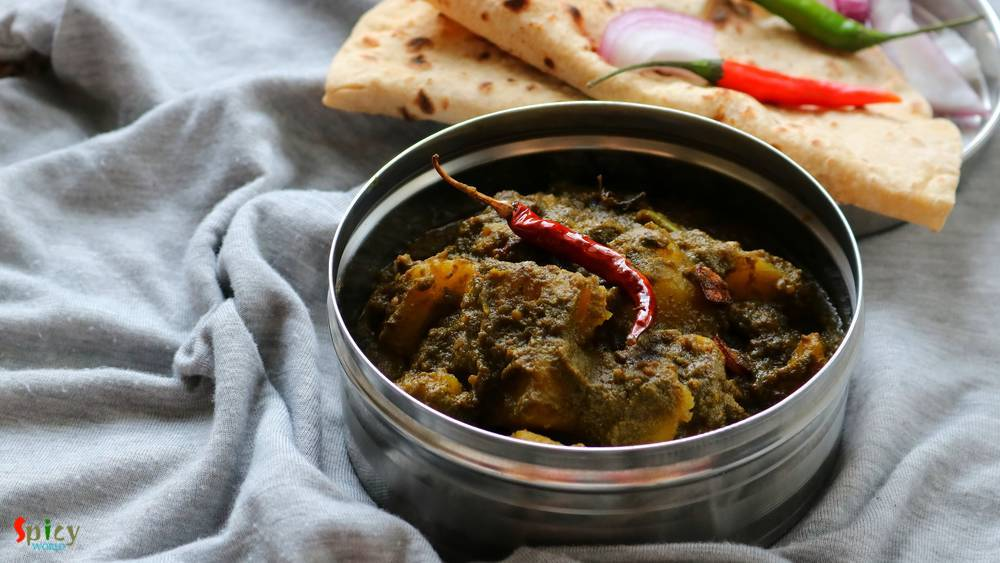
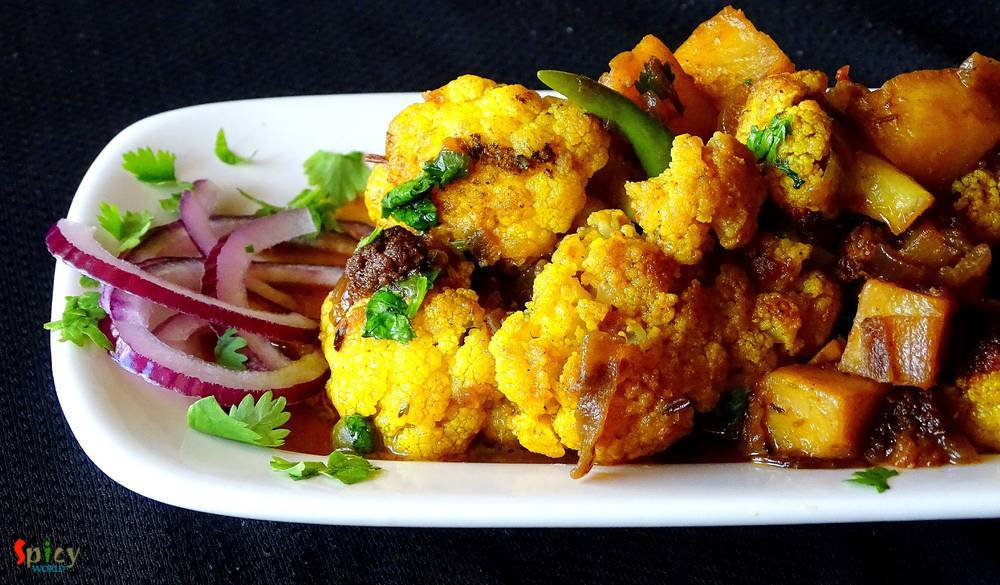

Simple and Easy Recipes
Posts on 'dhaba'

Veg Recipe
Jun 4, 2019
Paneer Masala has a spicy onion and tomato based gravy with some flavorful spices like garam masala powder, dry fenugreek leaves etc. In any dhaba style (road side food joints) curry you will get actual flavors of the spices as they follow one simple rule - slow cooking. Fry the onion until golden, cook ginger garlic paste until raw smell gone, after adding dry spices cook on low flame and obvious ...


Veg Recipe
Jan 14, 2019
Lehsuni Daal Tadka is a spicy toor lentil preparation which has a very flavorful garlicky tempering. This daal tadka goes best with plain chapati or rice. The recipe is very simple and easy. I usually make this lehsuni daal during winter as it tastes so good and seems comfort in a bowl in those chilly afternoons or nights. Try this in your kitchen and let me know how it turned out for you.

Veg Recipe
Dec 27, 2018
Paneer Bhurji is a delicious recipe of crumbled cottage cheese which goes best with plain chapati or paratha or pao. In this recipe, crumbled paneer will be cooked in onion, ginger, garlic, tomato based creamy sauce with some flavorful spices. This paneer bhurji gravy will take very less time to cook. Try this recipe in your kitchen and let me know how it turned out for you.

Nonveg Recipe
Nov 13, 2018
In India many dhabas and restaurants sell Keema Masala which is minced mutton curry. Keema means mince. This is a delicious non veg gravy which goes best with plain chapati or naan. In Keema Masala, minced mutton will be cooked in a onion tomato based sauce along with some flavorful spices and lots of fresh green chilies and coriander leaves. Try this recipe in your kitchen and enjoy a wonderful d ...

Veg Recipe
Oct 2, 2018
Paneer Butter Masala has a thick, creamy nut, onion and tomato based sauce with some juicy and lightly fried paneer pieces, also the rich gravy has an aromatic flavor of butter and kasuri methi (dry fenugreek leaves). Those who had 'dhaba' (street side food joints of India) food once in their life knows that no restaurant can replicate their rustic yet delicious taste. Dhaba style paneer butter ma ...

Nonveg Recipe
Dec 4, 2018
'Torka-ruti' has always been a great favorite of mine. It's great with any type of bread like naan, tandoori roti, lachha paratha ... but with plain chapati / roti, the pair becomes heavenly. I have already posted some recipes on 'dhaba style' but the most popular and well known recipe is 'dim torka' or 'whole moong daal with scrambled egg'. When they serve this dish with raw onion chunks, green c ...

Veg Recipe
Jul 24, 2018
Whenever you read 'dhaba style' (street food joint style), you must be thinking that the recipe will be interesting ... right? Well, you are not wrong. This recipe is very, very exciting and creates exact taste of Dhabewali Aloo Palak. It is close to Palak Paneer recipe but slightly different and little low in calories. This dish goes best with plain chapati or naan. Try this in your kitchen and l ...

Nonveg Recipe
Aug 25, 2016
We all love to eat food from Dhaba (road side food joint) while traveling. Nowadays you can find many fake dhabas and taste of their food is also fake, nowhere close to the authentic ones. Luckily few old and original dhabas in India still sells the best meals. After tasting those foods, you will probably think that their cooks must have some kind of magical hands. I once tasted their 'mutton curr ...

Nonveg Recipe
Sep 20, 2016
I know it's been two weeks I didn't post anything due to settling down in India, but heyy now I am back with another interesting recipe from 'dhaba' gharana. Every place has their own style of dhaba / road side food joints. Whenever we plan any short trip within Bengal, we try to make the lunch stop at some popular Dhaba. Their 'torka-ruti' and 'chicken curry' with rice are must for us. I like the ...

Nonveg Recipe
May 10, 2016
This chicken curry belongs to the category of 'dhaba food'. The gravy is very popular in Punjab and all over India. You can also make this dish with paneer or vegetables. The white, creamy texture of the gravy and beautiful aroma of fenugreek leaves will take you to heaven. I used boneless chicken for this recipe, feel free to make it with chicken on bone, it will be no issue. You can pair this di ...

Veg Recipe
Jan 25, 2016
We, nonvegetarian people, generally ordered nonveg dishes while eating at restaurants or dhabas. But we also love to eat home cooked vegetarian meals. In one of our trip to Digha before marriage, we made a stop at the famous 'Sher-e-punjab' for heavy breakfast. We ate there several times before but never did breakfast, so, that was our first time. As it was morning, we orderd veg like 'aloo parath ...

Veg Recipe
Jan 12, 2016
Whenever food has smoked or grilled flavour, there is no second thought about it. Because it has to be tasty. There are so many colorful vegetables available in grocery market during winter. I told you before that my love for winter is only because of food. We can make and also consume without any tension various types of food. Today I am talking about 'eggplant'. Though we both are not big fan of ...
")
Nonveg Recipe
Oct 15, 2015
In India 'dhaba' means roadside food joints. They offer delicious and spicy meals. Among all of their meals, 'tarka-roti' is the famous one. I once ate 'Mutton Tarka' from them and it was super tasty. Last week I try this tarka recipe and reveal that it tastes exactly like 'dhaba tarka'. Just follow the recipe and impress your family.

Nonveg Recipe
Oct 7, 2015
In India we all love "dhaba" foods and also we love eggs. Mostly their dishes are spicy. So, today I am sharing this spicy dish with you. Please try this at your home.